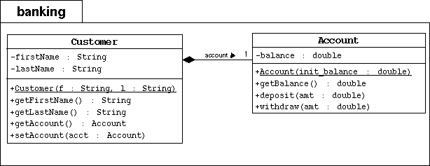

In this exercise you will expand the Banking project by adding a Customer class. A customer will contain one Account object.
|  |
| Note: please refer to Appendix G UML Modeling in Java to help understand this UML diagram. For example, the account relationship can be implemented as a data attribute in the Customer class; eventhough, it is not mentioned in the "attributes" section of the Customer class block. |
Start by changing your working directory to SL275/mod03/exercise2 on your computer.
cp ../../mod02/exercise3/banking/*.java banking/
Creating the customer Jane Smith. Creating her account with a 500.00 balance. Withdraw 150.00 Deposit 22.50 Withdraw 47.62 Customer [Smith, Jane] has a balance of 324.88